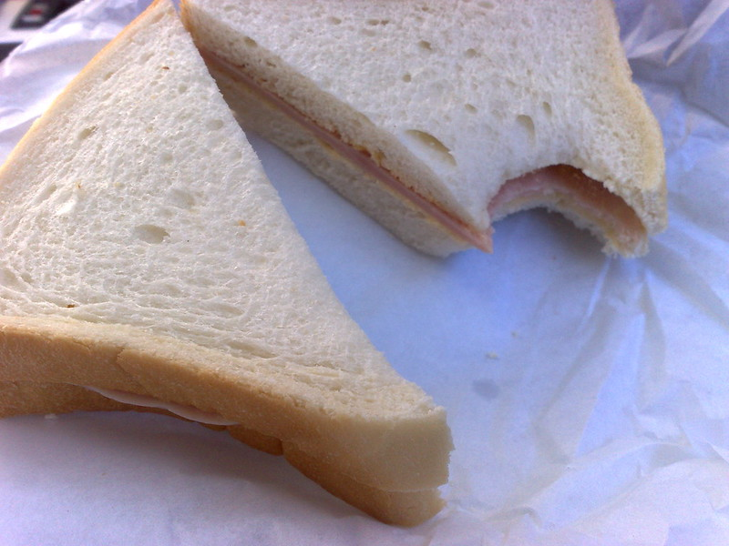

Ham Sammich

Image Source: [Creator: George Oates Copyright: George Oates Website: FLICKR
URL: https://www.flickr.com/photos/george/3192928477 Accessed 06/24/2025]
Description:
The magic essence of ham, cheese, and bread in a never bevore conceived environment: together. Take some bread procured at your local farmers market, bakery, or grocery store and liven it up with these revolutionary new concepts. HAM. CHEESE.
Ham and cheese might be the two most exciting new kids on the block. Old milk and cut up cold meat really make this a magical experience for everyone.
Ingredients:
Steps:
- Place bottom slice of bread, largest side down
- Place ham slice on top of bottom slice of bread, largest side down
- Place cheese slice on top of bottom slice of bread also largest side down
- Place top slice of bread on top of cheese with the largest side down
- Eat!
Home